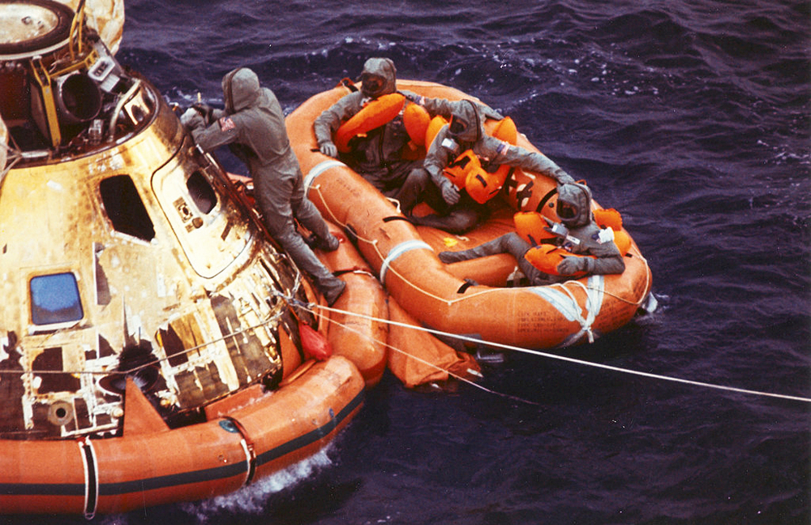
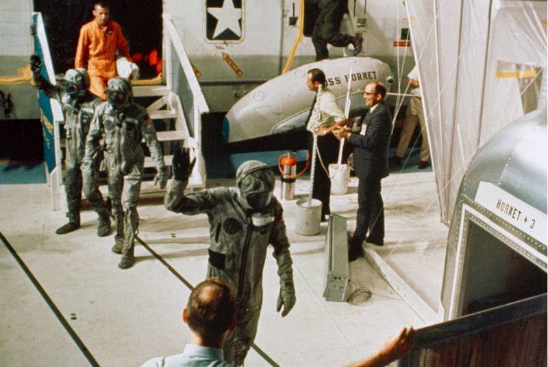

Bioseguridad en el espacio:
La Protección Planetaria.
escrito por: uri o'callaghan /inspiredby magazine of arts and culture editor /06 min read
Hemos llevado robots a Marte, pero nunca en las zonas donde hay más probabilidad de encontrar vida (tal y como la conocemos). Hay una razón para ello: las leyes internacionales que protegen los posibles ecosistemas de otros planetas (y el nuestro). Estos son los Protocolos de Protección Planetaria.
Una vez llevamos dos biólogos en Marte, los robots Viking I y Viking II. Esto fue en los años 70, y desde entonces, han sido los únicos robots marcianos con objetivos plenamente dedicados a la biología. La misión Viking iba en busca de vida microbiana en Marte. Desde entonces, los robots que han pisado suelo marciano han ido esencialmente en misiones de geología. A su vez, los Viking fueron los objetos más limpios jamás enviados hacia Marte. Ningún otro robot enviado ha alcanzado nunca los niveles de esterilización a los que fueron sometidos los Viking.
Hay una razón para ello: los Protocolos de Protección Planetaria.
“La protección planetaria no es solo una aspiración, es una obligación legal”.
Agencia Espacial Europea
Tras poner pie en la Luna por primera vez, los astronautas del Apollo XI tuvieron que entrar en cuarentena durante 3 semanas debido a la pequeña posibilidad de que trajeran algún germen lunar potencialmente peligroso. El espacio habilitado para la cuarentena de los astronautas había sido diseñado para poder acoger más de 100 personas en caso de que algo hubiera salido realmente mal. Solo a partir del Apollo XIV, quedó comprobado que la Luna estaba totalmente muerta, por lo que se dejaron de lado los protocolos de cuarentena. La historia es el resultado de todo lo que alguna vez ha podido suceder y por suerte no.

Los 3 astronautas del Apollo 11 con trajes de bioseguridad, puestos inmediatamente tras abrir la escotilla / NASA
Solo conocemos un ejemplo de lo que es la vida: nuestro planeta. Desconocemos cómo puede ser la biología en otros planetas y cuerpos celestes de nuestro universo. Desconocemos también si en nuestros alrededores -nuestro Sistema Solar- existen otras formas de vida. Tampoco sabemos si estas estarían basadas en carbono, agua y ADN, como todo ser vivo de nuestro hogar. De hecho, ni siquiera tenemos una definición de qué es la vida. Existen más de 100 definiciones sobre qué es la vida, y es probable que ninguna de ellas sea exacta más allá de la Tierra.
El resultado de todo esto es que no tenemos ni idea de como interactuarían las formas de vida terrestres con las de otro mundo. Existe la posibilidad de que una visita terrestre a nuestros planetas vecinos acabara con el desafortunado desenlace en que nuestros gérmenes destruyeran un hipotético y frágil ecosistema marciano. Aún peor: cabe la posibilidad -como una vez se temió con las misiones Apollo- de que una sonda con retorno a la Tierra llevase organismos microscópicos no terrestres potencialmente peligrosos para la vida de nuestro planeta.
Todas ellas son hipótesis poco probables pero existentes, por lo que tras el inicio de la carrera espacial comenzada en los años 50, se firmaron una serie de tratados internacionales dedicados a los protocolos y medidas a seguir para evitar la contaminación de mundos lejanos. Por ello, el Comittee on Space Resarch (COSPAR) se encargó de establecer los protocolos de Protección Planetaria, en cumplimiento del artículo IX del Tratado sobre el Espacio Ultraterrestre de Naciones Unidas que establece que los estados deberán evitar la contaminación dañina del espacio, así como "los cambios adversos en el medio ambiente de la Tierra como resultado de la introducción de materia extraterrestre". Tal y como expone la Agencia Espacial Europea (ESA), “la protección planetaria no es solo una aspiración, es una obligación legal”.
Artículo IX: “los estados deberán evitar la contaminación dañina del espacio y los cuerpos celestes”.
The Outer Space Treaty. United Nations.
Las políticas de Protección Planetaria de COSPAR se pueden encontrar en este enlace.
Las políticas de protección planetaria establecidas por el COSPAR (adoptadas tanto por la Agencia Espacial Europea (ESA) como la NASA) distinguen dos escenarios: en primer lugar, la contaminación terrestre a otros mundos (forward contamination), que podría poner en peligro las formas de vida no terrestres, así como comprometer los instrumentos de detección de vida extraterrestre, dando lugar a falsas pruebas (es poco útil ir de Florida a Marte para encontrar vida de Florida). En segundo lugar, la protección planetaria se encarga de evitar que las sondas terrestres vuelvan a la Tierra con microorganismos potencialmente peligrosos que pudieran poner en riesgo los ecosistemas terrestres (backward contamination).
Para ello, se establecen cinco categorías, en función del tipo de misión a realizar y del cuerpo celeste objetivo de la misión. De esta forma, una categoría más elevada supone más restricciones y políticas de protección planetaria.
Así, en la Categoría I se encuentra cualquier misión hacia un cuerpo celeste sin interés directo para entender la evolución química o el origen de la vida, como por ejemplo determinados asteroides. En esta categoría no se imponen requisitos de protección planetaria.
La Categoría IV, por ejemplo, comprende cualquier misión hacia un cuerpo celeste con interés hacia la posible evolución química y el origen de la vida, en el que hay una significante posibilidad de contaminación, que comprometería futuras investigaciones. En esta categoría se debe efectuar una esterilización (por lo menos parcial) de la nave (o robot). Así, Marte, Encélado y Europa, los principales cuerpos celestes en los que se cree que puede existir vida, se encuentran en esta categoría, por lo que cualquier misión hacia uno de los tres cuerpos celestes debe pasar un exhaustivo proceso de esterilización.

Recién llegados de la Luna, los astronautas del Apollo XI con trajes de bioseguridad. Las misiones Apollo fueron de Categoría V / NASA
La categoría más restrictiva es la Categoría V, que se encarga de todas las misiones que contemplen el retorno hacia la Tierra. Salir de la Tierra con una nave podría contaminar otros planetas, pero volver con ella puede contaminar nuestro hogar. Como se ha expuesto anteriormente, no tenemos ni idea de qué es la vida y tampoco sabemos si más allá de nuestro horizonte tenemos vecinos microscópicos. Dentro de esta categoría se encuentran dos subdivisiones:
Por un lado, las misiones de 'Retorno a la Tierra no restringido', como en el caso de la Luna (a partir del Apollo XIV) o Venus, en el que se entiende que no existen formas de vida. Por el otro lado, las misiones con destinación a Marte, así como Europa y Encélado (lunas de Júpiter y Saturno, respectivamente) se encuentran dentro de la subcategoría de 'Retorno a la Tierra restringido'.
Solo en excepciones ocasionales, siempre que se cumplan protocolos muy estrictos, estas naves podrán volver a la Tierra. Este fue el caso, por ejemplo, del Apollo XI y las tres semanas de cuarentena posteriores.
Empezábamos el artículo hablando de Marte, y es que si hay un cuerpo celeste más importante -por ahora- para la protección planetaria es el planeta rojo. En Marte existe agua y compuestos orgánicos, requisitos esenciales para la vida (tal y como la conocemos). Además, hay zonas -las denominadas Regiones Especiales (regiones donde los organismos terrestres serían propensos a replicarse, o que hay un alto potencial para la existencia de vida)- en que, debido a sus condiciones y en general, a su temperatura, algunos organismos extremófilos terrestres podrían llegar a replicarse.
Esto nos lleva a una irónica contradicción, ya que, a pesar de tener evidencia de agua en algunas zonas de su superficie y tener catalogadas algunas Zonas Especiales, las políticas de protección planetaria dificultan (y casi impiden) llevar rovers marcianos hacia estas regiones. Por ejemplo, a pesar de que se ha podido observar lo que se cree que son flujos de agua temporales, el rover Curiosity -actualmente en funcionamiento- no se puede acercar a la zona en cuestión -entre otras razones- porque no está suficientemente esterilizado para la misión.
Ahora en camino hacia Marte, (la llegada está prevista para febrero de 2021) el rover Perseverance tampoco aterrizará en una zona propensa a albergar vida actualmente. El acceso a cualquier Región Especial está prohibido para la misión, principalmente porque algunos de los sistemas del propio vehículo no soportan una esterilización completa. Por ello, Perseverance buscará indicios de vida extinta hace millones de años, en un lugar en el que las condiciones actuales no se consideran de especial riesgo para la contaminación planetaria.
Las políticas de Protección Planetaria de COSPAR se pueden encontrar en este enlace.
Inspired By Magazine tiene pensado hacer más artículos sobre la protección planetaria y la búsqueda de vida microbiana en nuestro Sistema Solar. El tema es tan extenso y maravilloso que nos dará para unos cuantos artículos más.

En Inspired By Magazine creemos en la libre circulación de ideas y por eso, nuestros artículos están disponibles para su republicación libre, con
la única condición de citar a sus autores y notificarles la republicación. Para más información, oriolocallaghan@gmail.com